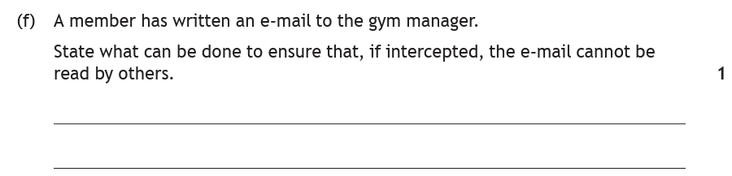
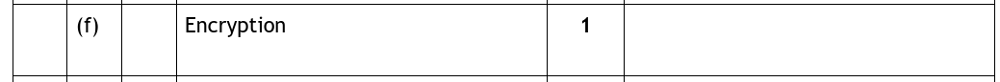

Introduction
Everything you do online — messages, payments, passwords — travels across networks that other people could try to break into or listen in on. National 5 covers two security precautions that defend against exactly those two threats: a firewall stops intruders getting into your network, and encryption makes intercepted data unreadable. (Security gets much bigger at Higher — for N5, these two are all you need, described briefly.)
Key Terms
Firewalls
A firewall is software or hardware that restricts access to your network. It sits at the boundary — like a bouncer on the door — inspecting the traffic trying to come in (and go out), and deciding what's allowed through. It can block risky connections, or connections from specific computers (e.g. a hacker).
Encryption
Encryption scrambles data so that it is only readable by the sender and the intended receiver. The message still travels across the network — and could still be intercepted — but to anyone else it's meaningless gibberish.
We routinely encrypt sensitive data sent over the internet: card details at online checkouts, passwords at login screens — and WhatsApp encrypts every message on its network as standard. Even if a criminal captured the data mid-journey, they couldn't read it.
Which One Does the Question Want?
With only two precautions to choose from, the exam question comes down to spotting the threat being described:
| The question describes… | Answer |
|---|---|
| Someone trying to access the network/system without permission — hacking, breaking in, unauthorised connections | Firewall |
| Data being intercepted, read or stolen in transit — emails, messages, payments crossing a network | Encryption |
In short: getting in → firewall; reading the mail → encryption.
Worked Example

How to tackle it: scan for the threat. The e-mail might be "intercepted" and must not be "read by others" — that's data being read in transit, which is exactly what encryption prevents. Nobody is trying to break into a network here, so it isn't a firewall question.

The command word is state, and the marking instructions want literally one word: encryption. Possibly the fastest mark in the paper — if you know the vocabulary.
Practice Questions
An online shop sends customers' card details across the internet when they pay. State the security precaution used to ensure the details cannot be read if intercepted.
Marking Instructions
Encryption
A school network uses a firewall. Describe the role of the firewall.
Marking Instructions
It restricts access to the network — deciding which data/connections are allowed through and blocking risky or unauthorised ones (e.g. hackers).
A doctors' surgery e-mails test results to patients. Explain how encryption protects these e-mails.
Marking Instructions
The e-mail is scrambled/encoded so it is unreadable (1 mark); only the sender and intended receiver can read it, so anyone who intercepts it sees meaningless data (1 mark).
A gaming company is worried that hackers may try to gain access to its office network. Identify the most suitable security precaution, and describe how it would protect the network.
Marking Instructions
A firewall (1 mark). It restricts access to the network by blocking unauthorised/risky connections, such as those from a hacker's computer (1 mark).
Encryption gets no marks here — the threat is someone getting in, not data being read in transit.